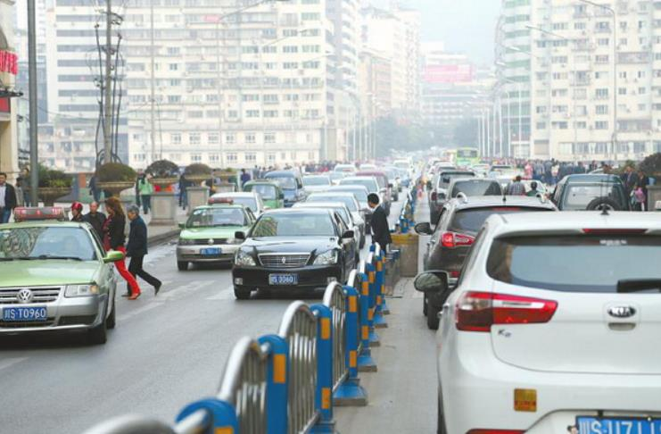

达州城区智能交通系统一期春节前后启用
来源：中国交通新闻网

道路拥堵是广大市民出行的“交通之患”。8月27日下午举行的市三届人大常委会第二十九次会议联组会议
，专题询问了我市缓堵保畅工作。
就我市缓堵保畅工作中的重点、难点、热点等群众关注的24个问题
，市城市规划局、市财政局、市交通运输局、市城管执法局
、市交警支队等应询部门主要负责人一一进行了回答。
市区道路交通现状及下步工作打算
现状：目前达州中心城区道路网形态总体以中心城区为中心呈现“放射状”，四大组团（老城区、北外、西外、南城）间交通需通过主城区进行联系。道路交通供需矛盾突出，城区交通日益紧张，中心城区交通拥堵、停车困难，已不能适应城市发展需求。
下步工作打算：将加强统一指挥协调。市政府拟参照道路交通综合整治行动经验，统一协调、调度、管理城区交通。二是编制《达州市城市交通安全管理规划》。依托新的《达州市城市总体规划》《达州市城市综合交通体系规划》等，科学、规范、系统地解决当前及今后一个时期城市道路交通安全管理的症结和难题，提出相应管理措施。三是提高静态交通服务水平。加强停车资源供给，在中心商业区、医院、学校、办公集中区、物流集散区、人流高峰区等地方，规划建设立体停车场；清理停止使用和改作他用的停车场，恢复用途。四是加强动态交通秩序管理。建立达州城区交通安全设施"规划、建设、管理"一体化机制。将南城、经开区交通安全设施的规划、建设、管理纳入市政府统一实施，确保城区交通安全设施的统一、规范、系统、连续。
将采取什么措施解决瓶颈路口的拥堵问题？
目前，达州中心城区共有拥堵节点13个，公安交警部门拟采取网格化管理、单向循环、禁止左转、设置交通信号灯等措施，均衡交通流量，力保安全畅通。一是加强执勤执法。实行网格化管理模式。二是实施禁左措施。红旗大桥南头路口实施全面禁左措施（不含公交车）；消除交通冲突点，提高路口通行能力。三是实施单向通行措施。1、好一新区域实施单向循环交通组织措施，提高红塔路出城车辆通行效率，分散文家梁一线车流。2、陵园路实行单向通行。即从朝阳中路陵园路路口进，经陵园路至殡仪馆至环凤路至塔石路通行，或开辟陵园路至凤凰大道东延线连接道路，形成微循环。3、安装交通信号灯。在通川大桥南头安装信号灯，从时间上分离人车平面冲突，以消除安全隐患，提高通川桥出城车辆通行效率，缓解街心花园交通压力。
达州城区智能交通管理现状及推进措施？
近年来，市委、市政府对城市交通管理、智能交通系统发展建设高度重视，目前全市已建设66座交通信号灯，其中14个信号灯系统采用智能联网信号控制主机，实现了朝阳西路塔沱路口至西客站路口、凤凰大道朝阳东路路口至金龙大道路口至广电大学路口的交通信号线控制，形成了车辆通行绿波带，同时根据流量流向的变化不断优化信号灯的配时方案；建成了5个交通智能卡口系统；建设了交警指挥中心。但与省内其他同等城市相比，我市智能交通系统在建设及应用方面仍处于落后状态。